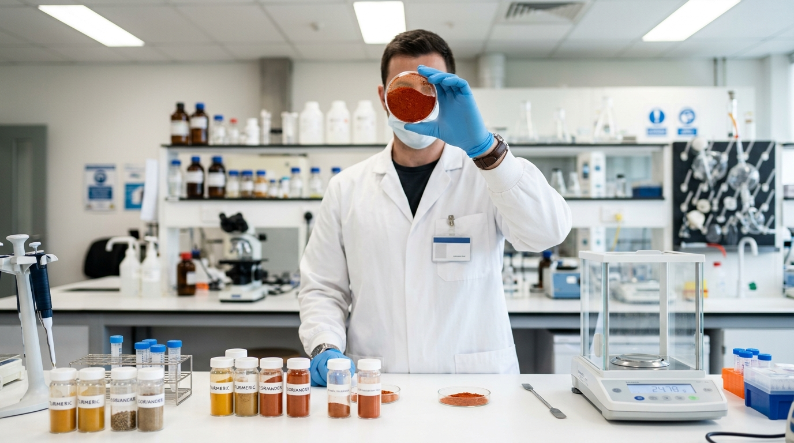
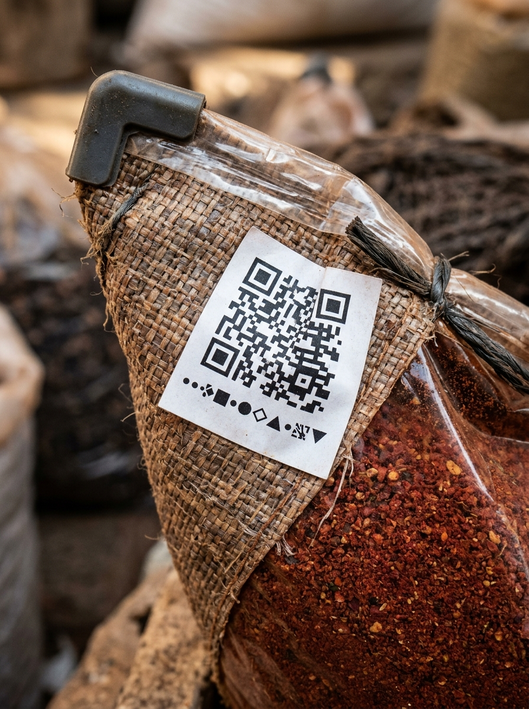

Home / Quality & traceability
Every claim we make, a lab can measure.
We test each lot before it ships and code it so it can be traced back to the farm-belt, the season and its own report. Trust, made checkable.
Seven things we check before a lot earns a code.
Pungency and colour tell you what you're buying. The safety panel tells you it's safe to put in food. We run both, lot by lot.
Pungency (SHU)
Scoville heat measured so red chilli matches your formulation, lot after lot.
Colour (ASTA / curcumin)
ASTA colour value for chilli and curcumin % for turmeric — the numbers buyers price on.
Moisture
Kept within export limits to protect shelf life and prevent caking and mould.
Pesticide residue
Screened against destination-market thresholds, including strict EU limits.
Aflatoxin
Tested to keep mycotoxins below regulated limits for safe human consumption.
Microbiology
Total plate count, yeast & mould and pathogen screening for food-safe lots.
Lead-chromate (turmeric)
Turmeric is explicitly screened for lead-chromate adulteration — a known risk we will not carry.
Purity & admixture
Foreign matter and admixture checked so what's in the bag is the spice on the label.

One code that tells the whole story.
Every pack we ship carries a lot code. That code is the thread back through our records to where and when the spice was grown, how it was processed, and what its lab report said.
If a question ever comes up on your side, you don't open an investigation — you quote a code, and we can pull the lot's full history in minutes.
Anatomy of a lot code
The documents that travel with your spice.
Export-grade lots ship with the paperwork your customs, QA and procurement teams need — no chasing required.
Certificate of Analysis
Lot-specific lab results for the spec and safety parameters relevant to your market.
Specification sheet
Variety, origin, grade, mesh, SHU/ASTA or curcumin, moisture and packaging detail.
Export & origin docs
Commercial invoice, packing list, certificate of origin and phytosanitary paperwork as required.
Aligned to global food-safety expectations
Our handling, hygiene and testing are built around recognised food-safety and export frameworks — including FSSAI compliance for Indian food businesses, Halal-friendly handling for the Gulf, and pesticide/aflatoxin limits aligned to EU thresholds.
Specific certifications can be confirmed for your market on request — tell us your destination and we'll share what applies to your lot.
Need a sample with its lab report?
Tell us the crop, grade and market. We'll send documented samples you can verify before you commit.